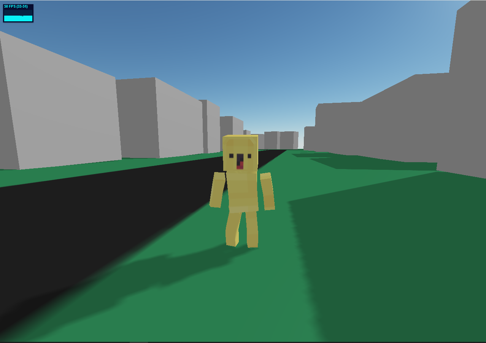

I worked on this in the start of 2024, at the same time as Street Slickers (this was peak working time for that too)
It's basically like GTA 5 but it is the real world map with procedurally generated insides!!
I quit cause I was lazy and was trying to get AI to do the whole thing (cause all my effort was on Street Slickers)
In 2025 I restarted it and made updates like chunk loading, then quit due to lack of interest (I got lazy again)
Image of it:
